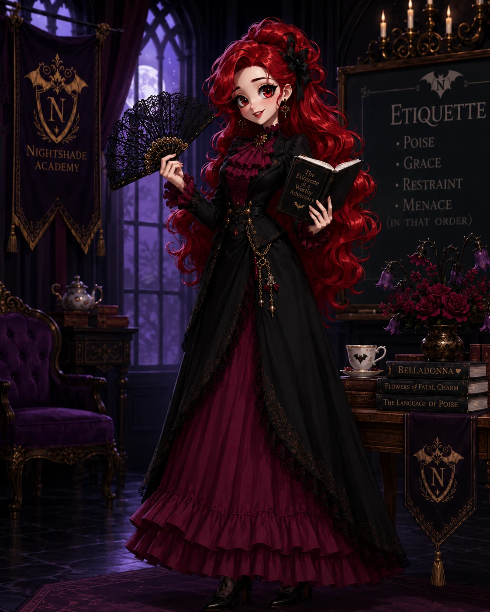

Cheerful, youthful, and endlessly enthusiastic, Professor Elaine Veinmore teaches young monsters the finer points of poise, grace, restraint, and refined menace.
Elaine absolutely adores Headmistress Belladonna—perhaps a little too much—and rarely misses an opportunity to quote her. Despite teaching flawless composure, she is famously clumsy. Teacups spill, demonstrations unravel, and furniture has learned to fear her. She always recovers with a smile and insists that true elegance lies in how one survives embarrassment.
Teaches
Poise, formal conduct, social menace, ceremonial etiquette
Known for
Encouragement, Belladonna devotion, accidental catastrophes
Classroom reputation
Warm, lively, and one overturned tea service from disaster
“Elegance is not never falling. It is rising before anyone has time to laugh.”